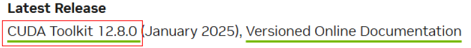
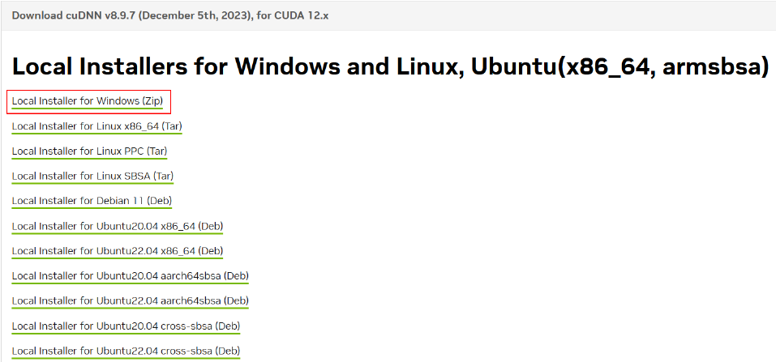
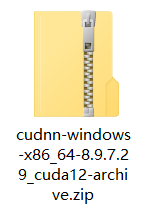
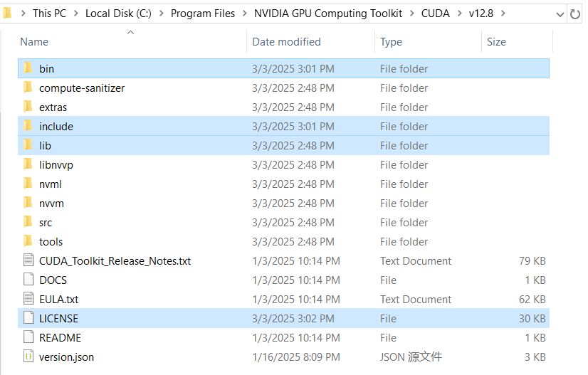
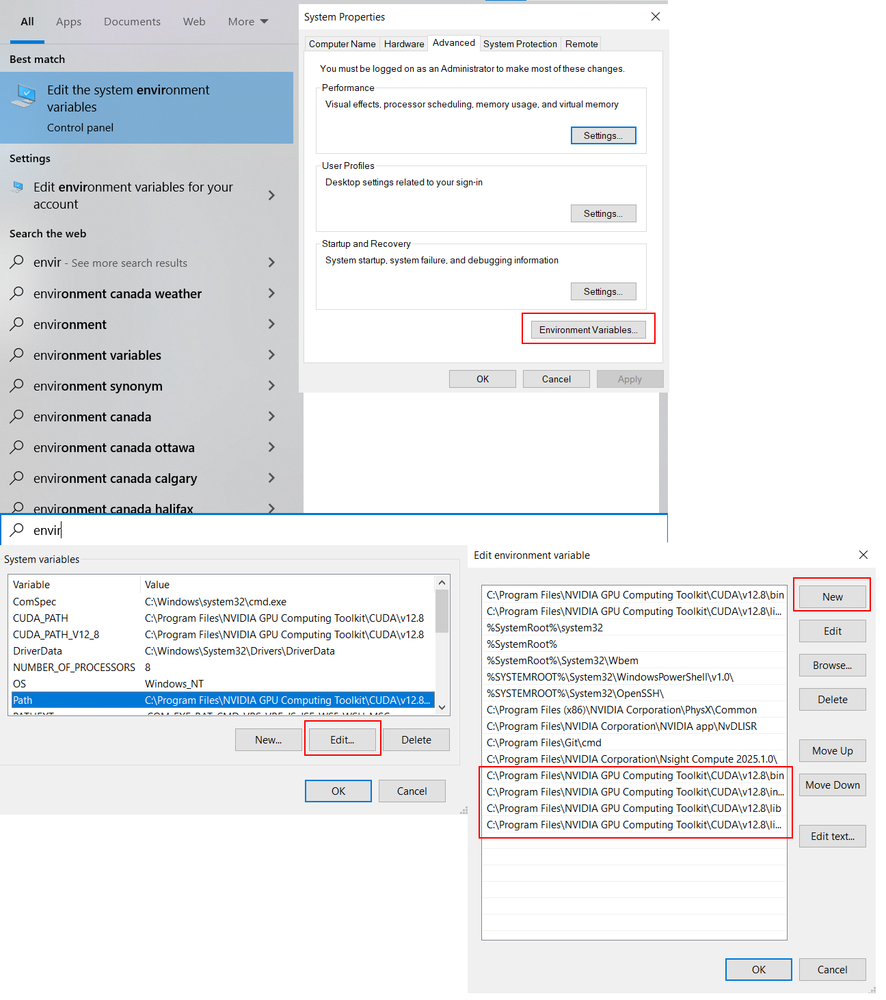

Install Cuda
Install CUDA Toolkit
Note
This section is only required if you’re running LLMs locally on your physical machine.
For Google Colab users:
Skip this installation (Colab provides pre-installed CUDA environments)
Proceed directly to Get Model API keys
Install Cuda
Cuda Install
Determine which version of cuda you should download
In the terminal, type
nvidia-smi //This will give information of your graphics driver // Find this line +-----------------------------------------------------------------------------------------+ | NVIDIA-SMI 566.36 Driver Version: 566.36 CUDA Version: 12.8 | |-----------------------------------------+------------------------+----------------------+
The following guide will use CUDA 12.8 as an example
Visit CUDA Toolkit Archive
Select version matching your framework requirements:

Follow the installation instruction and choose default setups
// Verify installations nvcc -v
cuDNN Version a. Visit cuDNN Toolkit Archive
- Download


Unzip everything from cuDNN zip to your local CUDA directory

Create Environment Variables

C:\Program Files\NVIDIA GPU Computing Toolkit\CUDA\v12.8\bin C:\Program Files\NVIDIA GPU Computing Toolkit\CUDA\v12.8\lib C:\Program Files\NVIDIA GPU Computing Toolkit\CUDA\v12.8\include C:\Program Files\NVIDIA GPU Computing Toolkit\CUDA\v12.8\libnvvp